Model
Dipole coupling
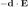
with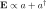
and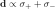
; dropping the energy-non-conserving terms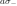
,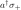
(RWA,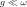
) leaves the JC Hamiltonian, which conserves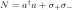
(Jaynes and Cummings 1963).Solution
In the block with  excitations, detuning
excitations, detuning
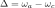
: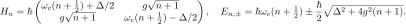
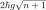
(vacuum Rabi splitting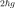
for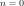
). An excited atom in the empty cavity: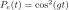
— reversible exchange of one photon. With a coherent field the different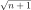
frequencies dephase and rephase: collapse and revival, a direct proof of field quantisation.Dispersive regime
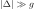
: second-order perturbation gives ,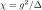
. The cavity frequency depends on the qubit state: non-destructive read-out of superconducting qubits.Worked example
Transmon–resonator:
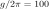
MHz,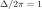
GHz: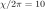
MHz, larger than a resonator linewidth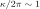
MHz, so the two qubit states shift the resonator by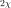
— well resolved. Strong coupling requires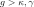
.Engineering applications
Circuit QED (qubit read-out and two-qubit gates via a bus resonator), cavity-QED single-photon sources, polariton lasers, Rydberg-atom masers.
Pitfall
The RWA fails in ultrastrong coupling (
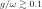
): the counter-rotating terms then shift and mix levels (Bloch–Siegert shift, Rabi model).